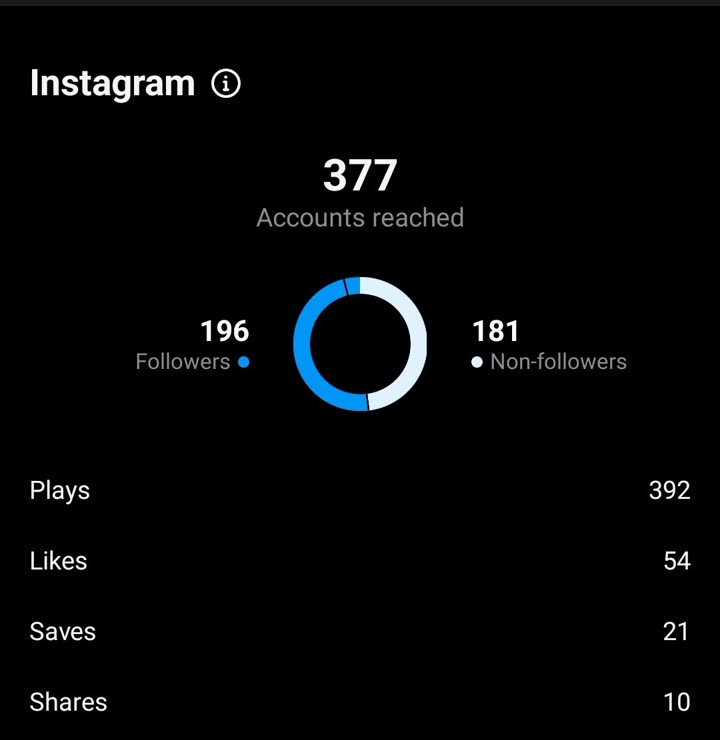
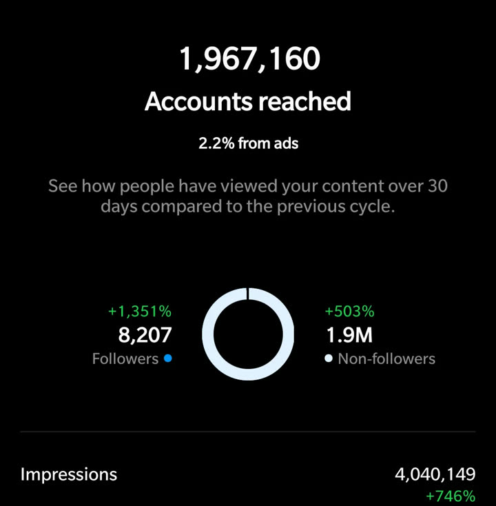

What I did
- Built the strategyWhat he stands for, who he is talking to, and why they should care.
- Wrote the scriptsEvery script, from the hook to the last line.
- Planned the contentThe formats, the topics and how often to post, so he never had to wonder what to make next.
- Turned views into leadsThe content was built to bring in clients, not just likes. It added a six-figure stream to his business.
- Everything in betweenIf it went on his page in those 60 days, I had a hand in it.
Before: posting in the dark and hoping for miracles. After: he knew exactly what his brand stood for.
What happened
65K+followers, up from 2,000
7M+organic impressions
60days. Not a year.
6 figuresin sales that came from content
Before and after

Day one: 377 accounts reached

Day 60: 1.97M reached
Tap for sound
One of the reels
Next fileSteven Bartlett